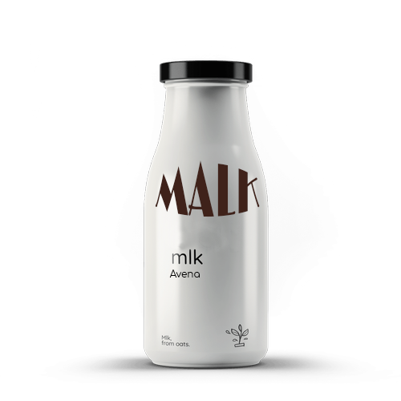

Somos una empresa argentina que produce alimentos saludables para mejorar la calidad de vida de las personas sin
crueldad animal, aditivos ni conservantes.
Nos tomamos el tiempo necesario para encontrar el balance entre calidad, sustentabilidad y sabor, poniéndole los
beneficios que necesitamos en nuestra alimentación y trabajando únicamente con materias primas naturales.
Beneficios
Ya sea por intolerancia a la lactosa, veganismo, o si simplemente prefieres no consumir productos lácteos, las
leches vegetales son una opción muy saludable. Beber y producir leche vegetal tiene muchos beneficios, tanto
para el ser humano como para el medio ambiente. Contienen gran concentración de minerales, vitaminas, calcio y
ácidos grasos esenciales.
Además, según investigaciones de la Organización Mundial de la Salud, una dieta de alimentos integrales basada
en plantas, puede ayudar a prevenir problemas de salud como la hipertensión, la obesidad, la diabetes, algunas
enfermedades cardíacas y algunos tipos de cáncer.
Las leches vegetales MALK son un producto 100% natural y sin conservantes, es por eso que su duración
es más
limitada que la de una leche animal. Debido a que las leches vegetales se sedimentan luego de
preparadas, se
sugiere siempre revolver la preparación antes de servir, de esta manera se conservará y se aprovechará
mejor
el
contenido.
Se pueden utilizar en recetas y preparaciones como sustituto de la leche animal. Por ejemplo la leche
de
avena
MALK es un excelente sustituto en postres y preparaciones dulces en general. La avena tiene muy buena
consistencia para cremas, y además no altera en gran medida el sabor principal de la preparación en
cuestión.
La leche de almendras MALK es ideal para todos los días. Favorece la reducción de los niveles de
colesterol,
contiene vitamina E que ayuda a reducir la oxidación de nuestras células, es rica en fibra, lo que
ayuda a
mantener una adecuada salud intestinal, además de tener un efecto saciante, y es rica en calcio, por
lo que
está
indicada también para fases de crecimiento.
La leche de castañas MALK, por su contenido en vitamina C, también es antioxidante. Ayuda a estimular
el
sistema
inmunitario, y por su aporte en hidratos de carbono puede ser una bebida ideal para niños, ancianos y
atletas,
convirtiéndose en una excelente fuente de energía.
Libre de organismos genéticamente modificados (non-GMO)
100% vegano
Todos nuestros productos son libres de gluten
Ingredientes naturales, libres de conservantes y aditivos artificiales
Cremosa y deliciosa hecha 100% con almendras
orgánicas. Perfecta para todos los días
Ideal para cocinar como sustituto de la leche de vaca en tus recetas
Malk sin azucares.
Tiene sólo 28 calorías por porción, no tiene lactosa ni
colesterol. Ideal para quienes eligen alimentarse mejor y con muy bajas calorías.
Ingredientes: almendras
orgánicas, agua.

Malk Avena.
Rica y saludable como la de almendras, pero además es fuente de fibra. No tiene azúcar
y tiene sólo 48 calorías por porción. Ideal para quienes eligen alimentarse mejor y con más sabor.
Ingredientes: avena
orgánica, agua.
Malk castañas.
La bebida vegetal de castañas es rica en carbohidratos, fósforo, calcio, magnesio,
potasio y vitaminas del grupo B.
Ingredientes: Agua, castañas de Cajú orgánicas, sal, carbonato de calcio